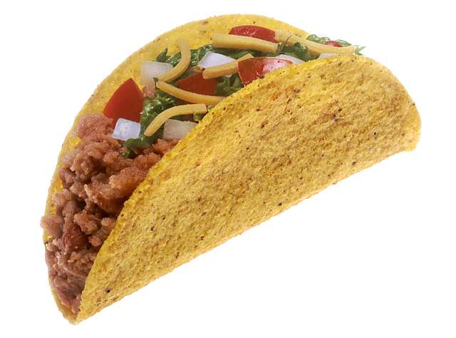

Back to Home
Tacos

Description
Tacos are a delicious Mexican food, consisting of a small tortilla wrapped around various fillings. Popular fillings can include beef, pork, chicken, fish, cheese and vegetables.
These tacos will be made with seasoned and spiced beef mince, lettuce, tomato salsa and guacamole.
Ingredients
Serves 2 (4 tacos per person)
Tacos
- 8 soft or hard shell taco shells
- 400g beef mince
- 1/2 white onion, diced
- 1/4 iceberg lettuce, shredded
- 2 tablespoon Vegetable oil
Taco Seasoning (courtesy of Nagi Maehashi at recipetineats)
- 1 teaspoon garlic powder
- 1 teaspoon onion powder
- 1 teaspoon dried oregano
- 2 teaspoon cumin powder
- 2 teaspoon paprika
- 1 teaspoon salt
- 1/4 teaspoon black pepper
Salsa
- 2 tomatoes, diced
- 1/2 red onion, diced
- Juice of 1 lime
- A few sprigs of fresh coriander
Guacamole
- 2 avocados, diced
- 1/4 red onion, diced
- Juice of 1 lime
- Salt
Instructions
- Combine all the salsa ingredients in a bowl, mixing well. Place aside for now.
- Combine all the guacamole ingredients in a second bowl, mixing well. Also place aside.
- Heat a frypan over a medium heat, add a little oil. Add white onion and cook until translucent.
- Add the mince and cook until browned, breaking the mince up in the pan.
- Add all the taco seasoning ingredients to the mince and onion and mix well. Cook for a few minutes.
- Warm through the taco shells in either the oven for a few minutes, or the microwave for 30-35 seconds.
- Build your tacos, using meat, lettuce, salsa and guacamole.
Back to Home